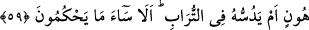

KIZ MÜJDELENDİĞİ
ZAMAN
56. Bir de kendilerine rızık olarak verdiklerimizden, mâhiyetini bilmedikleri
şeylere (putlara) pay ayırıyorlar. Allah’a andolsun ki, iftira etmekte olduğunuz
şeylerden mutlaka sorguya çekileceksiniz!
57. Onlar, kızların Allah’a âid olduğunu iddiâ ediyorlar. Hâşâ! Allah bundan
münezzehtir. Beğendikleri de (erkek çocuklar) kendilerinin oluyor.
58. Onlardan birine kız müjdelendiği zaman öfkelenmiş olarak yüzü kapkara
kesilir.
59. Kendisine verilen müjdenin kötülüğünden dolayı kavminden gizlenir. Onu,
aşağılık duygusu içinde yanında mı tutsun, yoksa toprağa mı gömsün! Bakın ki,
verdikleri hüküm ne kadar kötüdür!
Mekke müşrikleri, “bir de kendilerine rızık olarak verdiklerimizden,” ziraat,
mahsûlât, hayvan ve benzerlerinden yakınlaşma kasdıyla “mâhiyetini bilmedikleri
şeylere” hakîkatini ve değersizliğini bilmedikleri putlara “pay ayırıyorlar.” Onların
fayda ve zarar verdiklerine, Allah katında kendilerine şefâat edeceklerine inanıyorlar.
Pay ayırırken En’am sûresinde zikredildiği gibi “Zanlarınca: “Bu Allah’a, bu da
ortaklarımıza” (el-En‘âm, 6/136) diyorlar.
“nin zamirinin putlara râci olması da muhtemeldir. Bu durumda akıllı
varlıklar için kullanılan sıfatlarla putlarını vasfettikleri için onlar hakkında da aynı
çoğul sıygası kullanılmıştır. Âyetin mânâsı da şöyle olur: “İlim ile vasfedilmeyen ve
hissetmeyen eşyâ için hayvanlarından ve ziraat mahsullerinden bir pay ayırdılar mı
ayırmadılar mı?”
“Allah’a andolsun ki,” dünyâda putlara kurbanlar sunarak onların gerçek ilahlar
olduğunu iddiâ etmek sûretiyle “iftira etmekte olduğunuz şeylerden mutlaka sorguya
çekileceksiniz!” Bu, bir azarlama paylama sorgulamasıdır.
Âyette işâret vardır ki nefis ve hevâ sâhibi kişiler, hallerine vâkıf olmayan kişilere
kendilerini iyi insanlar zannettirmek ve onların yanında îtibar kazanmak için Allah’ın